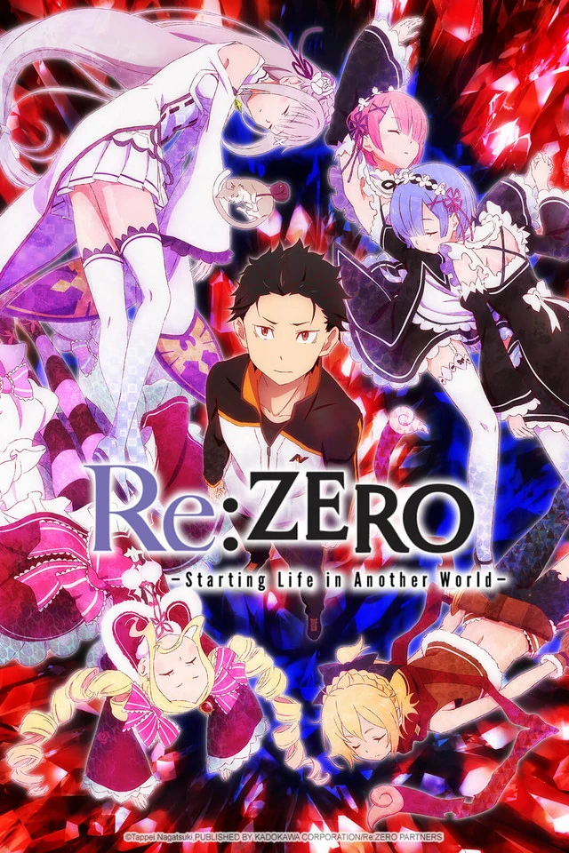

Re:Zero

Sinopse: De repente, o estudante de ensino médio Subaru Natsuki foi convocado para outro mundo no caminho de volta da loja de conveniência. Com a maior crise de sua vida sendo convocado para outro mundo, e sem sinal de quem o convocou, as coisas se tornam ainda piores quando é atacado. Mas quando ele é salvo por uma misteriosa garota de cabelos prateados com um gato fada, Subaru coopera com ela para devolver o favor. Quando eles finalmente conseguem obter uma pista, Subaru e a menina são atacados e mortos por alguém. Subaru então desperta no lugar que ele foi convocado e percebe que ele ganhou a habilidade "Retorno pela Morte" e se tornou um garoto indefeso que só tem a capacidade de rebobinar o tempo morrendo. Além do desespero, ele pode salvar a menina do destino da morte?